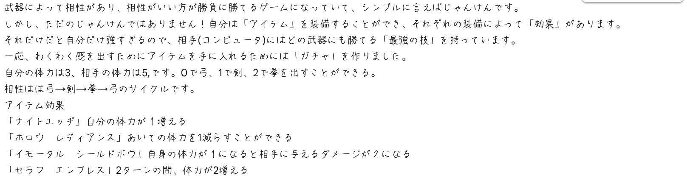
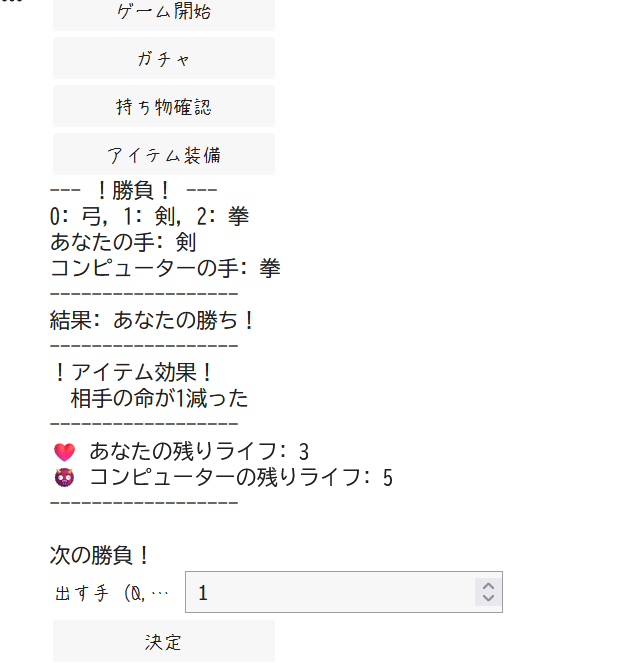
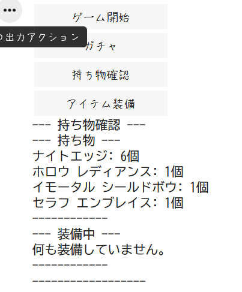
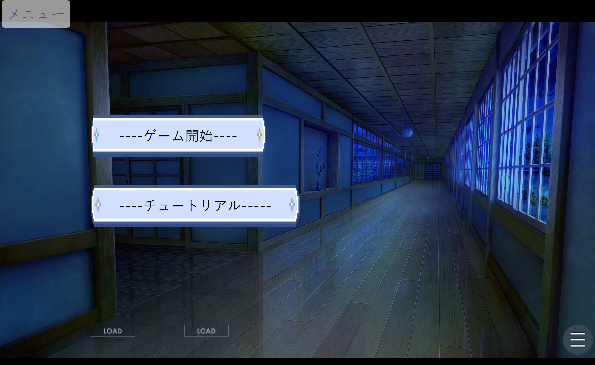
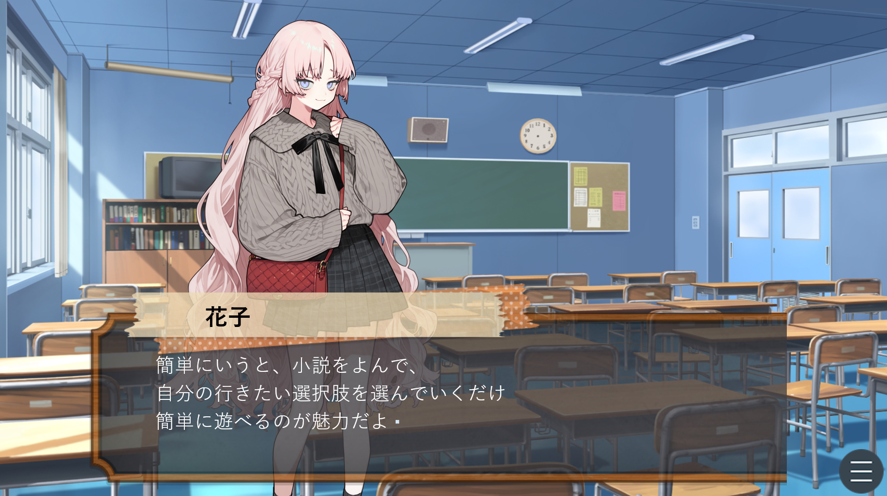
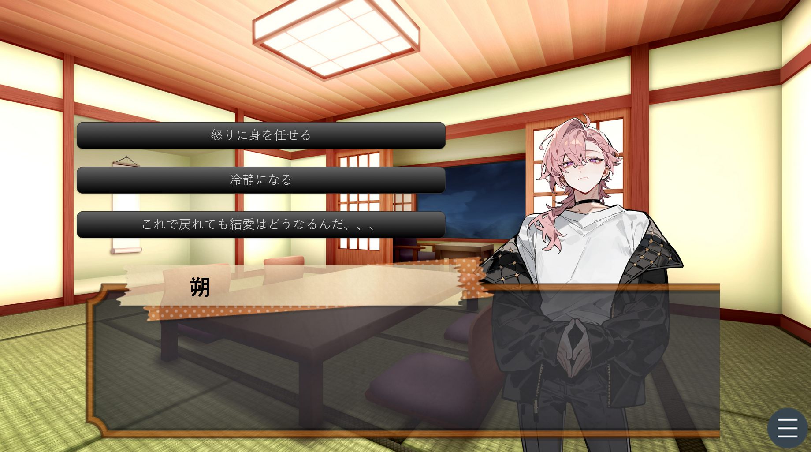

name 伊藤陽義(Ito Haruyoshi)
birthday 6/16
hobby 映画、漫画、アニメ鑑賞
大阪公立大学工業高等専門学校|総合工学システム学科|情報知能コース|2年
プログラミングの課題で作りました。
[ゲームの内容]
武器によって相性があり、相性がいい方が勝負に勝てるゲームになっていて、
シンプルに言えばじゃんけんです。しかし、ただのじゃんけんではありません！
自分は「アイテム」を装備することができ、それぞれの装備によって「効果」があります。
それだけだと自分だけ強すぎるので、相手(コンピュータ)にはどの武器にも勝てる「最強の技」を持っています。
一応、わくわく感を出すためにアイテムを手に入れるためには「ガチャ」を作りました。
オリジナルゲームのURLへ飛べます
説明
対戦中の画面
持ち物を確認する画面
高専祭の展示物として作りました。
担当はプログラミング、シナリオ、チュートリアル
素敵なイラストなどはお借りしました。
ゲーム名：呪いのwebサイト
URL:
ノベルゲームのURLへ飛べます
タイトル画面
実際のゲーム画面
選択肢